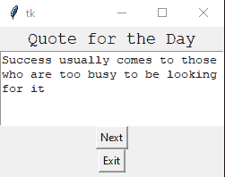

Tkinter 文本小部件
在本教程中，我们将介绍 Python 中的 Tkinter 文本小部件。如果你想在你的桌面应用中有一个文本编辑器，那么你可以使用 Tkinter 文本小部件。
文本小部件用于提供一个多行文本框(输入框)，因为在 Tkinter 中单行文本框是使用 输入小部件 提供的。
您可以在文本小部件中使用各种样式和属性。
您也可以使用文本小部件中的标记和标签来定位文本的特定部分。
像图像和链接这样的媒体文件也可以插入到文本小部件中。
有一些需要多行文本的应用，比如发送消息或者从用户那里获取长输入，或者到在应用中显示可编辑的长格式文本内容等。用例由这个小部件完成。
因此为了显示文本信息，我们将使用文本小部件。
Tkinter Text Widget
文本小部件的语法如下所示:
W = Text(master, options)
在上面的语法中，master参数表示父窗口。可以使用很多options来配置文本编辑器，这些选项写成逗号分隔的键值对。
Tkinter Text Widget 选项:
以下是文本小部件使用的各种选项:
| 选项名称 | 描述 |
|---|---|
bd |
该选项代表小部件的边框宽度。 |
bg |
该选项指示小部件的背景颜色。 |
exportselection |
该选项用于导出窗口管理器选择中选择的文本。如果您不想导出文本，那么您可以将该选项的值设置为 0。 |
cursor |
该选项将鼠标指针转换为指定的光标类型，并可设置为箭头、点等。 |
font |
该选项用于指示文本的字体类型。 |
fg |
该选项指示小部件的文本颜色 |
height |
该选项表示宽度 t 的垂直尺寸，主要以行数表示。 |
highlightbackground |
该选项指示小部件不在焦点下时的高亮颜色。 |
higlightthickness |
该选项用于指示高光的厚度。这个选项的默认值是 1。 |
highlightcolor |
该选项指示当小部件处于焦点下时焦点高亮的颜色。 |
insertbackground |
该选项用于表示插入光标的颜色。 |
padx |
该选项指示小部件的水平填充。 |
pady |
该选项指示小部件的垂直填充。 |
relief |
该选项指示小部件的边框类型。该选项的默认值为下沉。 |
state |
如果该选项的值设置为禁用，则小部件对鼠标和键盘无响应 |
tabs |
该选项用于控制制表符如何用于文本的定位 |
width |
该选项代表小部件的宽度，以字符表示。 |
wrap |
要将较宽的线缠绕成多条线，使用该选项。这个选项的默认值是 CHAR ，它在任何字符处断开变得太宽的线 |
xscrollcommand |
如果你想让文本小部件水平滚动，那么你可以将这个选项设置为滚动条小部件的 set()方法 |
yscrollcommand |
如果你想让文本小部件垂直滚动，那么你可以将这个选项设置为滚动条小部件的 set()方法 |
spacing1 |
此选项指示要在文本的每一行上方插入的垂直空间。 |
spacing2 |
该选项用于指定当逻辑行换行时，要在显示的文本行之间增加多少额外的垂直空间。该选项的默认值为 0 |
spacing3 |
此选项指示要插入文本每行下方的垂直空间。 |
selectbackground |
该选项表示所选文本的背景颜色。 |
selectborderwidth |
该选项指示所选文本周围边框的宽度。 |
insertofftime |
该选项表示时间量(单位为毫秒)，在期间，插入光标在眨眼周期中处于关闭状态 |
insertontime |
该选项表示时间量(单位为毫秒)，在期间，插入光标在眨眼周期中位于上的 |
insertborderwidth |
为了表示光标周围边框的宽度，我们使用这个选项。该选项的默认值为 0 。 |
Tkinter 文本小部件方法:
文本小部件使用的一些方法如下:
| 方法 | 描述 |
|---|---|
index(index) |
此方法用于获取指定的索引。 |
see(index) |
此方法根据字符串在指定索引处是否可见返回 true 或 false。 |
insert(index,string) |
此方法用于在指定索引处插入字符串。 |
get(startindex,endindex) |
此方法返回指定范围内的字符 |
delete(startindex,endindex) |
此方法删除指定范围内的字符 |
标签处理的方法
主要是标签用来分别配置文本小部件的不同区域。标签基本上是给文本各个区域的名称。下面给出了一些处理标签的方法:
tag_config()要配置标签的属性，将使用该方法。
tag_add(tagname, startindex, endindex)该方法主要用于标记出现在指定索引的字符串。
tag_delete(tagname)这个方法主要是用来删除指定的标签。
tag_remove(tagname, startindex, endindex)要将标签从指定的范围中移除，使用此方法。
标记处理方法
在给定的文本小部件中，为了将书签标记到字符之间的指定位置使用了标记。下面给出了一些方法:
index(mark)此方法主要用于获取指定标记的索引。
mark_names()此方法用于获取文本小部件范围内的所有标记名称。
mark_gravity(mark, gravity)为了得到给定标记的重力，将使用这种方法。
mark_set(mark, index)此方法用于通知给定标记的新位置。
mark_unset(mark)为了从文本中删除给定的标记，将使用此方法。
Tkinter 文本小部件示例
让我们讨论文本小部件的一个基本示例。文本小部件示例的代码片段如下所示:
import tkinter as tk
from tkinter import *
win = Tk()
#to specify size of window.
win.geometry("250x170")
# To Create a text widget and specify size.
T = Text(win, height = 6, width = 53)
# TO Create label
l = Label(win, text = "Quote for the Day")
l.config(font =("Courier", 14))
Quote = """Success usually comes to those who are too busy to be looking for it"""
# Create a button for the next text.
b1 = Button(win, text = "Next", )
# Create an Exit button.
b2 = Button(win, text = "Exit",
command = win.destroy)
l.pack()
T.pack()
b1.pack()
b2.pack()
# Insert the Quote
T.insert(tk.END, Quote)
tk.mainloop()
上面给出的代码片段的输出如下:

如果你想破坏这个窗口，只需点击退出按钮。
总结:
在本教程中，我们学习了 Tkinter Text 小部件，当我们想要在应用中添加一个文本区域来接受大量用户输入时，会用到这个小部件。